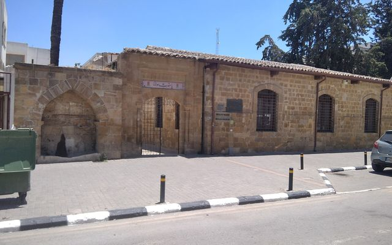

Die Schichten Zyperns: von der Bronzezeit bis zu den Osmanen. Im Norden Zyperns, am Kreuzungspunkt des östlichen Mittelmeers, entfalten sich viertausend Jahre Geschichte – vom Kupferhandel bis zu gotischen Kathedralen. Dank des Kupfers, das ihr womöglich den Namen gab, war die Insel in der Bronzezeit ein Zentrum des Handels im östlichen Mittelmeer; Enkomi bei Tuzla ist eine wichtige Stadt dieser Zeit. Unter den Stadtkönigreichen der Eisenzeit war Salamis das mächtigste; Pferde- und Wagenbestattungen der Königsgräber, das Theater von Soli und der Palast von Vouni zeugen davon. Das nach dem Apostel Barnabas aus Salamis benannte Kloster und die Basilika Ayia Trias in Karpaz erzählen vom frühen Christentum. In byzantinischer Zeit entstanden im Beşparmak-(Kyrenia-)Gebirge die Burgen St. Hilarion, Buffavento und Kantara. Die ab 1192 herrschenden Lusignans hinterließen die schönsten gotischen Bauten des östlichen Mittelmeers: die Abtei Bellapais sowie die Kathedralen der hl. Sophia in Nikosia (heute Selimiye-Moschee) und des hl. Nikolaus in Famagusta (heute Lala-Mustafa-Pascha-Moschee). Die Venezianer, die die Insel 1489 übernahmen, verstärkten die Burg von Kyrenia und die Mauern Famagustas gegen Artillerie. Mit der osmanischen Eroberung 1571 wurden die Kathedralen zu Moscheen, und Bauten wie der Büyük Han und das Mevlevi-Kloster prägten Nikosia. Das Schiffswrack aus dem 4. Jh. v. Chr. in der Burg von Kyrenia steht für die eng mit dem Meer verbundene Geschichte der Insel.
Im Norden Zyperns, am Kreuzungspunkt des östlichen Mittelmeers, entfalten sich viertausend Jahre Geschichte – vom Kupferhandel bis zu gotischen Kathedralen.
Dank des Kupfers, das ihr womöglich den Namen gab, war die Insel in der Bronzezeit ein Zentrum des Handels im östlichen Mittelmeer; Enkomi bei Tuzla ist eine wichtige Stadt dieser Zeit. Unter den Stadtkönigreichen der Eisenzeit war Salamis das mächtigste; Pferde- und Wagenbestattungen der Königsgräber, das Theater von Soli und der Palast von Vouni zeugen davon.
Das nach dem Apostel Barnabas aus Salamis benannte Kloster und die Basilika Ayia Trias in Karpaz erzählen vom frühen Christentum. In byzantinischer Zeit entstanden im Beşparmak-(Kyrenia-)Gebirge die Burgen St. Hilarion, Buffavento und Kantara. Die ab 1192 herrschenden Lusignans hinterließen die schönsten gotischen Bauten des östlichen Mittelmeers: die Abtei Bellapais sowie die Kathedralen der hl. Sophia in Nikosia (heute Selimiye-Moschee) und des hl. Nikolaus in Famagusta (heute Lala-Mustafa-Pascha-Moschee).
Die Venezianer, die die Insel 1489 übernahmen, verstärkten die Burg von Kyrenia und die Mauern Famagustas gegen Artillerie. Mit der osmanischen Eroberung 1571 wurden die Kathedralen zu Moscheen, und Bauten wie der Büyük Han und das Mevlevi-Kloster prägten Nikosia. Das Schiffswrack aus dem 4. Jh. v. Chr. in der Burg von Kyrenia steht für die eng mit dem Meer verbundene Geschichte der Insel.
Wo Sie diese Epoche erleben
 Ausgrabungsstätte Enkomi (Alasya)Gazimağusa
Ausgrabungsstätte Enkomi (Alasya)Gazimağusa Ausgrabungsstätte SalamisGazimağusaMuseum und Ausgrabungsstätte Kral MezarlarıGazimağusa
Ausgrabungsstätte SalamisGazimağusaMuseum und Ausgrabungsstätte Kral MezarlarıGazimağusa Ausgrabungsstätte SoliLefke
Ausgrabungsstätte SoliLefke Vouni-PalastLefke
Vouni-PalastLefke Kloster St. BarnabasGazimağusaAyia Trias Bazilikasıİskele
Kloster St. BarnabasGazimağusaAyia Trias Bazilikasıİskele Antiphonitis-KircheGirne
Antiphonitis-KircheGirne Burg St. HilarionGirne
Burg St. HilarionGirne Burg BuffaventoGirne
Burg BuffaventoGirne Burg Kantaraİskele
Burg Kantaraİskele Kloster BellapaisGirne
Kloster BellapaisGirne Selimiye-MoscheeLefkoşa
Selimiye-MoscheeLefkoşa Lala Mustafa Paşa-MoscheeGazimağusa
Lala Mustafa Paşa-MoscheeGazimağusa Burg OthelloGazimağusa
Burg OthelloGazimağusa Burg Kyrenia und SchiffswrackmuseumGirne
Burg Kyrenia und SchiffswrackmuseumGirne Büyük Han (Große Karawanserei)Lefkoşa
Büyük Han (Große Karawanserei)Lefkoşa
Museum Mevlevi TekkeLefkoşa🎓 Testen Sie sich
1. Welches Metall war Quelle des bronzezeitlichen Reichtums Zyperns?
2. Welche Kathedrale war die Selimiye-Moschee in Nikosia ursprünglich?
3. Ab welchem Jahr herrschten die Lusignans auf der Insel?
4. Aus welcher Zeit stammt das Schiffswrack in der Burg von Kyrenia?